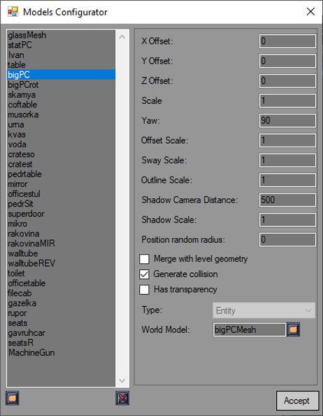
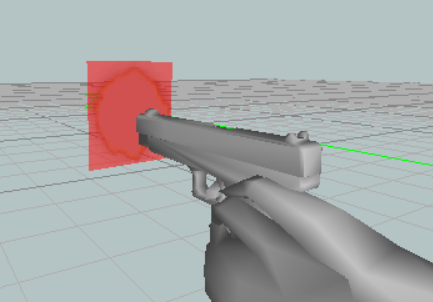

Models configurator lets you swap entities and weapons sprites with models.

The engine supports MD3 models for everything so you will need to convert them to MD3 format. You can use any 3D modeling software for that as long as it has proper plugins.
Keep in mind, this is a swap for sprites, not a replacement. You will still need to provide editor with at least Pickup sprite for entities and weapons. Since models are just swaps for sprites, you will need to provide proper number of frames (which in most simple case is the same as sprites number for your entity or weapon).
To add a model, press the left button beneath models list and then select entity or weapon you want to swap with a model.
The fields here are, as always, mostly selfexplanatory but here is what they do:
X Offset - offsetting model on X axis
Y Offset - offsetting model on Y axis
Z Offset - offsetting model on Z axis
Scale - sets model scale. This is different from entity scale. Entity scale sets collision scale as well. Model scale only sets scale of entity representation on screen.
Yaw - rotates model along Y axis, that is to the left and to the right
Offset Scale (weapons only) - sets how much weapon shifts when changing weapons
Sway Scale (weapons only) - sets how much weapon sways when moving camera
Outline Scale - sets outlines width (if enabled in settings)
Shadow Camera Distance - a setting for future updates
Shadow Scale - a setting for future updates
Position random radius - if this set to something higher that zero, model will be offset to a random position at this radius.
Merge with level geometry - if enabled, static decorations (that is, non-breakable and lighted entities) will be merged with level geometry. This will improve performance and eliminate problems with models disappearing even if a part of it is on screen. Be aware though, that if you want to use outlines, you will need to disable this option as level geometry doesn't have any outlines at all.
Generate collision - if enabled, a new collison box based on model bounding will be created. Otherwise entity will use its old collision circle.
Has transparency - if enabled, a more advance (but more processor demanding) sorting of models will be used when merging geometry (it will be ignored if model is not merged with level geometry). Be awared, just a single transparent model on map is enough to enable this mode. It's a good idea to not have trasparent models at all.
World Model - model representing entity or weapon in world (for weapons this is its pickup model).
View Model (weapons only) - model showing weapon in player's hands. If you want a muzzle flash to appear you will also need to provide a separate mesh (that is, as a part of the model) called "muzzle" (all lower-case letters). This mesh should be a plane in the place where you want your muzzle flash to appear (see screenshot). Textures for muzzle flash can be changed manually in "Sprites/Effects" folder. The engine supports 3 muzzle flash textures which it will choose randomly each time a weapon is shot.
Ammo Model (weapons only) - model representing weapon ammo pickup
